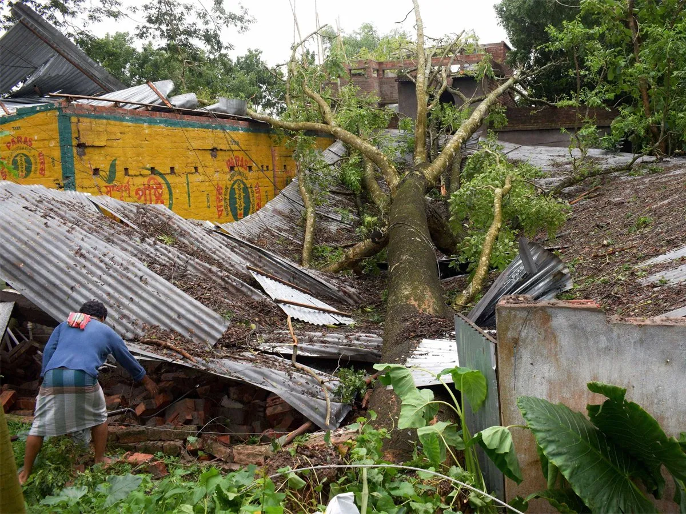
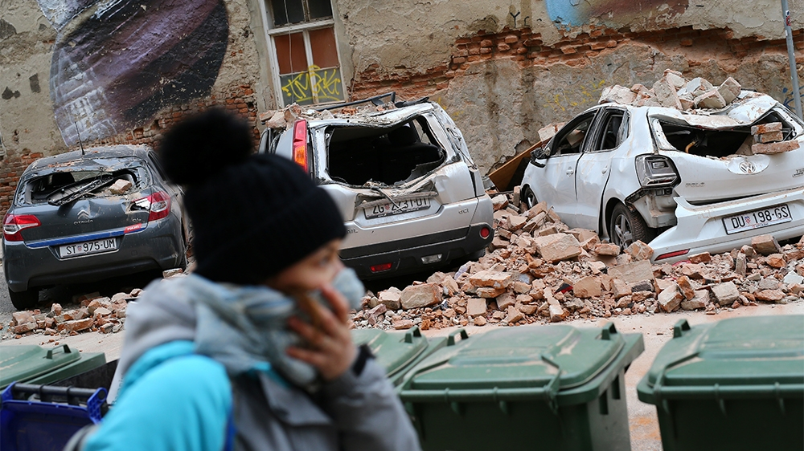

<div class="jumbotron" style="background-color: rgb(11, 7, 31);  height: calc(95vh);">
  <div class="split left">
    <div class="container">
      <div class="row">
        <div style="padding-left: 0px;padding-top: 20px;" class="col-6">
          
        </div>
        <div class="col-6">
          <p style="padding-top:50px;padding-left: 0px;color:whitesmoke;font-size: 10px;">
           Along with the ongoing battle against COVID-19, India had to brace itself with another disaster in the form of Amphan cyclone.
            West Bengal was the one of the regions that was largely affected. Around 200,000 of those affected by the cyclone are currently under shelter homes. 
            The onset of the cyclone caused panic among people who looked to save themselves from it and forgot to keep up the social distancing norms which is critical to contain COVID-19
            spread.With the large amont of goverement supported shelter home being utilised by migrant workers, there are very few left for those affected by cyclone. 
            So we tried to understand if the chaos created by the cyclone which began on 20th of May, could has assisted in the further spread of COVID-19. Looking at the COVID-19 cases day wise from 15th May to 28th May explains the effect the cyclone had in COVID-19 spread with big spikes
            resulted after 20th May. 
          </p>
        </div>
      </div>
      <div class="row">
        <canvas id='bengalCanvas'>{{bengal_chart}}</canvas>
      </div>
      </div>
      <div class="split right">
        <div class="container">
          <div class="row">
            <div style="padding-left: 0px;padding-top: 20px;" class="col-6">
              
            </div>
            <div class="col-6">
              <p style="padding-top:50px;padding-left: 0px;color:black;font-size: 10px;">
               Croatia had to battle a 5.3 magnitude earthquake on the March 22nd this year. The biggest victim to this disaster was the city of Zagreb. Already trying to fight off the COID-19 pandemic,
                the earthquake resulted in huge losses and resulted in huge loss of houses and some damages to hospitals as well. After we analyzed the covid-19 cases before and after the earthquake ,
                 we can conclude from the data that somehow earthquake played its role in causing a spike in the COVID-19 cases in croatia especiallly in Zagreb. The lack of shelter and other necessities could have made people
                 to look for alternatives thereby making the maintaining of social distancing norm next to impossible.
              </p>
              <p style="padding-top:5px;padding-left: 0px;color:black;font-size: 10px;">
                 From the below graph we can see that clearly after 22nd March there are huge spike in the COVID-19 cases which could imply that the disaster played some role in reporting of more COVID-19 fresh cases.
               </p>
            </div>
          </div>
          <div class="row">
            <canvas id='croatiaCanvas'>{{croatia_chart}}</canvas>
          </div>
          </div>
      </div>
</div>

